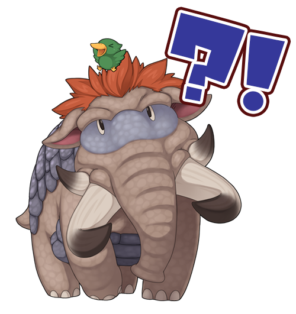
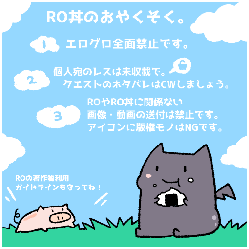

-

RO-mastodon
-

-

RO丼とは
mastodonのラグナロクオンライン(RO)クラスタ向けインスタンスです。ROの話題専門です。
ラグナロクオンラインの現役プレイヤー、引退しちゃった人、始めてみようと思ってる人なんかが登録可能です。
2017年4月19日くらいに誕生しました。2020年11月1日の時点で7000を超えるユーザが登録しています。
なお、Internet explorerではうごきません！(登録は出来ます＆EdgeはOK)
他のブラウザやスマフォアプリ等をご利用ください。
おやくそく

(イラスト: @poteko_ro さん thx!!)
(イラスト: @poteko_ro さん thx!!)
エログロは全面禁止です。
「ラグナロクオンライン」著作物利用ガイドラインを守りましょう。
公開タイムライン（ローカルタイムライン）はみんなが見るところです。ROやRO丼と関係ない内容のトゥートや個人宛メッセージのトゥートはお控えください。
参考: 公開範囲について
公開タイムライン（ローカルタイムライン）にROのストーリークエストのネタバレになる内容をトゥートする場合はCWを使ってください。
CWについてはこのページの下の方に説明があります。
CWについてはこのページの下の方に説明があります。
初回ログイン時に簡単なチュートリアルが表示されますので、参考にしてください。
その後、名前を設定してください。名前にサーバ名を含めておくと交流しやすくなります。
次に他のユーザのトゥートを見たり気になったユーザをフォローしたりしてみてください。
RO丼のことでわからないことがあったら、まずこのページを見て下さい。
その後、名前を設定してください。名前にサーバ名を含めておくと交流しやすくなります。
次に他のユーザのトゥートを見たり気になったユーザをフォローしたりしてみてください。
RO丼のことでわからないことがあったら、まずこのページを見て下さい。
どんな感じなの？
ROの話題がえんえんと続いてるTwitterみたいな感じをイメージしてもらえるとだいたいあってると思います。
投稿することを「トゥート」と言います。ゾウさんの鳴き声らしいです。
他の人のトゥートを「ブースト」することが出来ます。ブーストすると、フォローされている人のホームタイムラインにも表示されるようになります。
一度に500文字まで書けて、画像や短かい動画の添付も可能です。
覚えておくと便利なこと
タグ機能あります。#タグ名 で使えます。半角のシャープに任意の文字列です。自由に作っていただいて構いません。
大文字小文字は同じタグとみなされますが、半角全角は別タグになります。
例 #RO丼 と #ro丼 は同じタグ扱いになります(どちらも半角なため)が、#ＲＯ丼 は #RO丼 とは別のタグの扱いになります。
よくわからない人は 「#タグ名」これをコピペして前後のカッコを取って タグ名 のところを書き換えましょう。
タグもトゥートするところの上にある検索フォームで検索出来ます(が、いまのところ前方一致検索しか出来ない模様)。
一番流れてるのは#RO絵描き タグあたりでしょうか。
タグについてもう少し詳しく知りたい方はこちらを。
大文字小文字は同じタグとみなされますが、半角全角は別タグになります。
例 #RO丼 と #ro丼 は同じタグ扱いになります(どちらも半角なため)が、#ＲＯ丼 は #RO丼 とは別のタグの扱いになります。
よくわからない人は 「#タグ名」これをコピペして前後のカッコを取って タグ名 のところを書き換えましょう。
タグもトゥートするところの上にある検索フォームで検索出来ます(が、いまのところ前方一致検索しか出来ない模様)。
一番流れてるのは#RO絵描き タグあたりでしょうか。
タグについてもう少し詳しく知りたい方はこちらを。
トゥートするときに、「CW」というのを指定出来ます。
CW は contents warning の略です。簡単に言えば「閲覧注意」です。これを指定してトゥートすると、詳細を見たい場合は「もっと見る」をクリックしないと閲覧出来ません。
CWなトゥートにもタグは付けられますが、詳細の方に入れる必要があります。
CWなトゥートにもタグは付けられますが、詳細の方に入れる必要があります。
画像付きのトゥートするときに、「NSFW」というのを指定出来ます。
NSFW は not suitable for work です。簡単に言えば「仕事中の閲覧注意」です。これを指定してトゥートすると、画像をクリックしないと閲覧出来ないようになります。
RO丼のブログ(RO丼日記)の方でも時々使い方の細かい説明をしているので参考にしてください。
RO丼から派生したあれこれはこちらを御覧ください。
BOTについて
利用は可能ですが、自動投稿は「未収載」か「非公開」にしてください。手動で投稿する場合は制限はありません。
内容はラグナロクオンライン内のものに限ります。
この項目については今後、ユーザへの影響、サーバへの負荷などを考慮して変更する可能性がありますので注意してください。
リンクについて
RO丼へのリンクはできるだけこのページ http://ro.puyo.jp/ にお願いします。
ご紹介いただく際には、このページを熟読の上ご利用ください的なことも書き添えていただきますと幸いです。
バナーは用意しておりませんが、自由に作成いただいて構いません。
ご紹介いただく際には、このページを熟読の上ご利用ください的なことも書き添えていただきますと幸いです。
バナーは用意しておりませんが、自由に作成いただいて構いません。
運営方針について
RO丼は「ラグナロクオンライン」著作物利用ガイドラインを遵守した運用を心がけています。
そこそこの安定運用と投稿されたデータを守るためにそこそこのサーバ代等がかかっています。
RO丼アンテナ、RO丼日記には広告を掲載しています。収入は（ほとんどないですが）サーバ代等運用資金の一部として利用しています。
PixivFANBOX や Amazon欲しいものリストを利用して支援を募っています。
(一覧、詳細はこちら)
あくまで個人が趣味の範囲で行っていますので、ご理解ご協力をお願い致します。
そこそこの安定運用と投稿されたデータを守るためにそこそこのサーバ代等がかかっています。
RO丼アンテナ、RO丼日記には広告を掲載しています。収入は（ほとんどないですが）サーバ代等運用資金の一部として利用しています。
PixivFANBOX や Amazon欲しいものリストを利用して支援を募っています。
(一覧、詳細はこちら)
あくまで個人が趣味の範囲で行っていますので、ご理解ご協力をお願い致します。
当サイトに掲載された内容によって生じた損害等の一切の責任を負いかねますので、ご了承ください。
個人間の揉め事に関しては一切関与しません。
裁判所からIP開示請求があった場合はこれに応じます。
個人間の揉め事に関しては一切関与しません。
裁判所からIP開示請求があった場合はこれに応じます。
FAQ
- 投稿出来ない、ログイン出来ない
-
twitter のDMで以下の情報を送ってください。送り先 noriko_ro
- 現在の状況(ログイン出来ない、投稿出来ないなど)
- RO丼のユーザID
- 登録しているメールアドレス
- 使用中のIPアドレス (この辺で調べてください)
- アカウント削除したい
- できませんが将来的に提供する可能性はあります。
- アカウント停止された理由が知りたい
- 理由に心当たりのない人はお問い合わせください。
立てた人
のりこさん @noriko
© Gravity Co., Ltd. & LeeMyoungJin(studio DTDS) All rights reserved.
© GungHo Online Entertainment, Inc. All Rights Reserved.